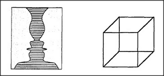
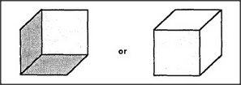

Each of the drawings below can be seen in at least two different ways.
The drawing on the left might represent either a single candlestick or two people facing each other. The drawing on the right looks like a cube — but first it looks like a cube as seen from above and then, suddenly, it looks like a cube as seen from below. Why does each drawing seem to change its character from time to time? Why can't we see both forms at once? Because, it seems, our agencies can tolerate just one interpretation at a time.
We must ask certain questions here. First, what enables us to see those pictures as composed of the features we call by names like edges, lines, corners, and areas? Our vision-systems seem virtually compelled to group the outputs of our sensors into entities like these. Next, what enables us to see those features as grouped together to form larger objects? Apparently, our vision-systems again are virtually compelled to represent each of those features, be it a corner, edge, or area, as belonging to one and only one larger object at a time. I won't discuss those questions in this book except to suggest a general hypothesis:
Our vision-systems are born equipped, on each of several different levels, with some sort of locking-in machinery that at every moment permits each part, at each level, to be assigned to one and only one whole at the next level.
We should also ask, how do we recognize those objects as examples of familiar things like faces, cubes, or candlesticks? And again we'll make the similar hypothesis that our memory-frame machinery also uses locking-in machinery that permits each object to be attached only to one frame at a time. The end result is that in every region of the picture, the frames must compete with one another to account for each feature.